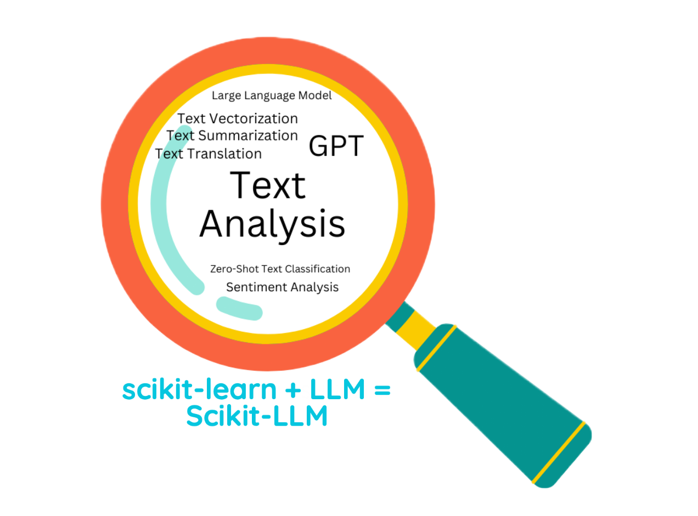

library(reticulate)Scikit-Learn-LLM Zero Shot Learners
textmining
nlp
transformer
chatgpt
sentiment
scikit
Aufgabe
Fragen Sie ChatGPT via Scikit-Learn-LLM zum Sentiment der ersten 7 Texte (=Tweets) aus dem Germeval-2018-Datensatz (Test). Nutzen Sie die gleiche Zahl an Tweets aus dem Train-Datensatz zum Finetuning Ihres Modells. Nutzen Sie den Endpoint ZeroShotGPTClassifier.
Hinweise:
- Beachten Sie die Standardhinweise des Datenwerks.
- Nutzen Sie Python, nicht R.
- Das Verwenden der OpenAI-API kostet Geld. 💸 Informieren Sie sich vorab. Um auf die API zugreifen zu können, müssen Sie sich ein Konto angelegt haben und über ein Guthaben verfügen. Werfen Sie hin und wieder einen Blick auf Ihr OpenAI-Guthaben-Konto.
Caution
Aktuell sind scikit-llm und openai in den aktuellsten Versionen inkompatibel.
ERROR: pip’s dependency resolver does not currently take into account all the packages that are installed. This behaviour is the source of the following dependency conflicts. scikit-llm 0.4.2 requires openai<1.0,>=0.27.9, but you have openai 1.3.5 which is incompatible.
Die einfachste Lösung ist, beide Pakete in verschiedenen venvs zu lagern. \(\square\)

Lösung
Wir legen ggf. eine neue venv an:
#virtualenv_create("scikit-llm")Und nutzen diese:
use_virtualenv("scikit-llm")Check:
py_config()py_list_packages() |> head()Ggf. müssen Sie zunächst die nötigen Module installieren, z.B. so: reticulate::py_install("scikit-llm").
#py_install("scikit-llm")Module importieren:
from skllm import ZeroShotGPTClassifier
from skllm.config import SKLLMConfig # Anmeldung
import pandas as pd
import time
import osTrain-Daten importieren:
csv_file_path_train = 'https://github.com/sebastiansauer/pradadata/raw/master/data-raw/germeval_train.csv'
germeval_train = pd.read_csv(csv_file_path_train)Test-Daten importieren:
csv_file_path_test = 'https://github.com/sebastiansauer/pradadata/raw/master/data-raw/germeval_test.csv'
germeval_test = pd.read_csv(csv_file_path_test)Die ersten paar Texte aus dem Train-Datensatz herausziehen:
n_tweets = 7
X_train = germeval_train["text"].head(n_tweets).tolist()
X_trainUnd hier sind die Labels dazu:
y_train = germeval_train["c1"].head(n_tweets).tolist()
y_trainUnd analog für den Test-Datensatz:
X_test = germeval_test["text"].head(n_tweets).tolist()Anmelden bei OpenAI:
OPENAI_SECRET_KEY = os.environ.get("OPENAI_API_KEY")
OPENAI_ORG_ID = os.environ.get("OPENAI_ORG_ID")
SKLLMConfig.set_openai_key(OPENAI_SECRET_KEY)
SKLLMConfig.set_openai_org(OPENAI_ORG_ID)Model definieren:
clf = ZeroShotGPTClassifier(openai_model="gpt-3.5-turbo")Model fitten:
clf.fit(X = X_train, y = y_train) Vorhersagen:
y_pred = clf.predict(X = X_test) 0%| | 0/7 [00:00<?, ?it/s]
14%|█▍ | 1/7 [00:38<03:48, 38.03s/it]
29%|██▊ | 2/7 [00:48<01:48, 21.62s/it]
43%|████▎ | 3/7 [01:16<01:38, 24.65s/it]
57%|█████▋ | 4/7 [01:18<00:47, 15.81s/it]
71%|███████▏ | 5/7 [01:28<00:27, 13.69s/it]
86%|████████▌ | 6/7 [01:31<00:09, 9.87s/it]
100%|██████████| 7/7 [01:33<00:00, 13.32s/it]Voilà:
for tweet, sentiment in zip(X_test, y_pred):
print(f"Review: {tweet}\nPredicted Sentiment: {sentiment}\n\n")Review: Meine Mutter hat mir erzählt, dass mein Vater einen Wahlkreiskandidaten nicht gewählt hat, weil der gegen die Homo-Ehe ist ☺
Predicted Sentiment: OFFENSE
Review: @Tom174_ @davidbest95 Meine Reaktion; |LBR| Nicht jeder Moslem ist ein Terrorist. Aber jeder Moslem glaubt an Überlieferungen, die Gewalt und Terror begünstigen.
Predicted Sentiment: OFFENSE
Review: #Merkel rollt dem Emir von #Katar, der islamistischen Terror unterstützt, den roten Teppich aus.Wir brauchen einen sofortigen #Waffenstopp!
Predicted Sentiment: OFFENSE
Review: „Merle ist kein junges unschuldiges Mädchen“ Kch....... 😱 #tatort
Predicted Sentiment: OFFENSE
Review: @umweltundaktiv Asylantenflut bringt eben nur negatives für Deutschland. Drum Asylanenstop und Rückführung der Mehrzahl.
Predicted Sentiment: OFFENSE
Review: @_StultaMundi Die Bibel enthält ebenfalls Gesetze des Zivil- und Strafrechts.
Predicted Sentiment: OTHER
Review: @Thueringen_ @Miquwarchar @Pontifex_de Man munkelt, Franziskus ist großer "Kiss"- und "Black Sabbath"-Fan! #RockOn
Predicted Sentiment: OTHER